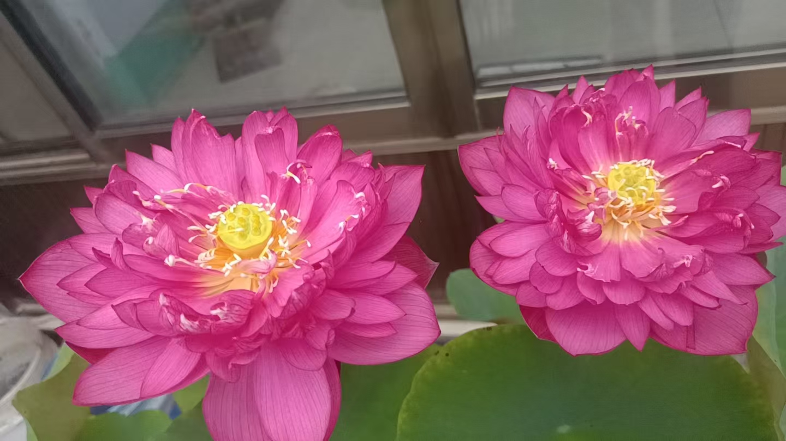

20260623返修父母 用念力给父母清理观亮身体 宅子观成金砖玉瓦 天上地下都放光 很管用
修炼修行符咒术法
今天见到一个几亿老总，给我一切条件，帮我发展
我说，我只喜欢闲云野鹤，扫地僧
全国四个酒厂，一个就几亿
访天下有缘人
下一步，这黄总供酒
[呲牙][呲牙][呲牙][呲牙]
遍访天下有缘供酒的人
为什么说难
不是我难
也不再宣传招生
生命到了尽头，醒悟就醒悟
不醒悟下一世没有真人
不在收费，不再定价
只收半分家产
就这么定了
大死一会今方活，活过来了，也不醒悟
还发现一个事，一个故事里的几个人
身体都出现变故
盲修瞎练
冥冥之中，自有定数
不听话，这挨揍可不是我说了算的
静坐长思自己过
反观内视，反思自己
酒老总给我的权利，有什么用
酿酒师
生产，经营权
商标使用权
广告形象使用权
还有啥，一张张的钢印匡匡匡的盖啊
不过我不知道怎么用
还可以基酒分装
五六千的酱香酒，在路上了
要是做酒卖酒，我也没时间
酒老板让我做顾问
[强]
每年给五万
我说不用给钱，有事问就行
应该一会就转过来
[呲牙][呲牙][呲牙][呲牙]
这么好的亲人[强]
我跟钱也没有仇啊
[呲牙][呲牙][呲牙]
这么好的福报怎么修出来的
修的没心没肺，谁看也是好人
[呲牙][呲牙][呲牙]
[强][强][强]
[强][强][强]
前天回家看了看父母
还是水平高[呲牙]
[强][强][强][强][强]
明显年轻有活力了
[强][强][强][强][强]
免费查体，啥事没有，指标都正常
前年还看着老态龙钟的
返修父母
就是用念力给父母清理观亮身体
宅子观成金砖玉瓦
天上地下都放光
很管用
从头到脚，逐一观亮
晶莹剔透
无遮无碍